Руководство по хирургии
Введение
Хирургия — это сложный процесс, требующий точности и хладнокровия. В данном руководстве описаны инструменты, подготовка и этапы проведения различных хирургических операций.
Инструменты
В начале смены в операционных находятся хирургические наборы, содержащие все необходимые инструменты. Они так же есть в наборах медика.
| Инструмент | Функция |
|---|---|
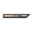 Скальпель |
Делает надрез на коже, чтобы открыть доступ к внутренностям. |
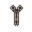 Зажим |
Останавливает кровотечение, зажимая сосуды. Используется для извлечения предметов. |
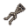 Ретрактор |
Раздвигает края раны для доступа к операционному полю. |
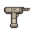 Хирургическая пила |
Распиливает кости (череп, грудная клетка) для доступа к органам или ампутации. |
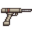 Хирургическая дрель |
Используется для сверления костей. |
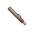 Прижигатель |
Прижигает рану для остановки кровотечения и закрытия разреза. |
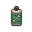 Костный гель |
Восстанавливает поврежденные кости перед их сращиванием. |
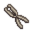 Костоправ |
Фиксирует сломанные кости на месте после обработки гелем. |
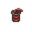 Fix-O-Vein |
Используется для восстановления вен и артерий, при этом лечит внутренние кровотечения. Также используется для устранения гематом в головном мозге, лечит тяжёлые повреждения мозга и глаз. |
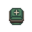 Продвинутый набор для лечения травм |
Используется для восстановления всех органов, кроме мозга и глаз. |
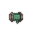 Хирургическая нить |
Используется для сшивания повреждённой плоти. Его также можно использовать для зашивания разрезов вместо прижигателя. |
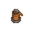 Синтетическая нить |
Используется для лечения обожжённой плоти, лечения чрезмерных ожогов. |
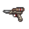 Система PICT |
Прецизионный инструмент для разрезов и прижигания использует высокочастотное вибрирующее лезвие, лазерный прижигатель в сочетании с системой контроля всасывания жидкости для точного рассечения тканей и предотвращения утечки жидкости. |
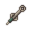 Система управления надрезами (СУН) |
Используется для рассечения плоти, не требует зажима кровотечения и перестановки органов. В основном выполняет функции скальпеля, гемостата и ретрактора в один этап при первичном разрезе. Функционирует как скальпель только на этапах после первого. Данный инструмент не поставляется в обычные хирургические наборы. |
Подготовка к операции
Успех операции зависит не только от навыков хирурга, но и от подготовки пациента и рабочего места.
Анестезия
Хирургия без анестезии вызывает шок и боль. Используйте анестезию, если пациент в сознании.
- Операционный стол: Положите пациента на стол, пристегните. Если стол оборудован анестезией, включите подачу.
- Обезболивающие: В крайнем случае используйте опиоиды (Трамадол, Оксикодон), но они менее эффективны. Чаще всего у вас не будет роскоши в виде операционного стола, поэтому придётся использовать этот вариант.
Условия
- Одежда: Снимите броню с пациента.
- Положение: Пациент должен лежать (кроме операций "СТОЯЩИЙ НА НОГАХ").
- Стол: Чем лучше место для операции, тем быстрее и эффективнее будет проводится операция:
- Операционный стол (наилучший вариант)
- Портативный операционный стол
- Каталка для транспортировки, стол, кровать, рама от окна
- Пол, кушетка для медэвакуации (худший вариант)
Хирургические операции
Для начала операции включите режим операции
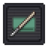
и выберите интент помощи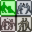
.Базовые операции (Уровень 1)
Продвинутые операции (Уровень 2)
| Операция | Процедура |
|---|---|
| Внутреннее кровотечение ПРИОРИТЕТ |
|
| Восстановление костей |
|
| Удаление личинки ВСЕГДА В ГРУДИ ПРИОРИТЕТ |
|
Специализированные операции (Органы и Конечности)
| Операция | Процедура |
|---|---|
| Восстановление органов (Всё кроме глаз и мозга) |
|
| Восстановление глаз |
|
| Восстановление мозга ТРЕБУЕТ ВСКРЫТИЯ ЧЕРЕПА |
|
| Ампутация |
|
| Установка протеза |
|
| Пластическая операция МИНИМАЛЬНЫЙ ПРИОРИТЕТ |
|
АвтоДок (AutoDoc)
Автоматизированная хирургическая система. Находится в медблоке. Может выполнять ограниченный набор операций без участия хирурга, но требует настройки и загрузки пациента.
Комбинированные операции
Для экономии времени можно выполнять несколько операций в один заход.